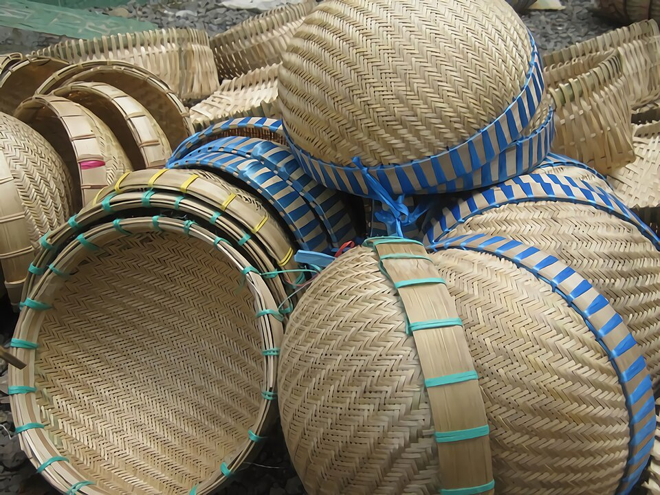

Membatik dengan canting
Ibu-ibu Sanggar Kencana mengajari cara memegang canting sampai mewarnai. Kain buatan Anda boleh dibawa pulang.
3 jam, Rp 120.000 per orang
Pesan kelas iniIbu-ibu Sanggar Kencana mengajari cara memegang canting sampai mewarnai. Kain buatan Anda boleh dibawa pulang.
3 jam, Rp 120.000 per orang
Pesan kelas ini
Mulai dari membelah bilah bambu, lalu menganyam satu tampah kecil. Cocok untuk anak-anak di atas 10 tahun.
2 jam, Rp 75.000 per orang
Pesan kelas ini
Bikin serabi di atas tungku tanah liat bersama Bu Sari, lalu makan hasilnya selagi hangat.
90 menit, Rp 60.000 per orang
Pesan kelas iniPilih paket, lalu tanggal yang masih ada tempat. Hari yang penuh atau tutup tidak bisa dipilih. Harga dihitung otomatis.
Harga per orang. Anak di bawah 5 tahun gratis. Rombongan di atas 15 orang mendapat potongan 10%. Isi paket dibandingkan di tabel di bawah.
Kelas di luar jadwal ini bisa dibuka untuk rombongan minimal lima orang.
| Kelas | Hari | Mulai | Kuota |
|---|---|---|---|
| Membatik dengan canting | Senin, Rabu, Sabtu | 09.00 | 12 orang |
| Menganyam bambu | Selasa, Kamis, Minggu | 09.00 | 15 orang |
| Memasak jajanan desa | Setiap hari | 10.30 | 10 orang |
| Menanam padi | Desember sampai Februari | 07.00 | 30 orang |
| Memanen padi | Mei sampai Juni | 07.00 | 30 orang |
Sudah 22 tahun membatik dan mendirikan sanggar bersama sebelas ibu di dusunnya. Murid pertama biasanya diminta menggambar garis lurus dulu dengan canting, karena dari situlah tangan belajar tenang.
Belajar menganyam dari ayahnya sejak kelas tiga SD. Kini ia memasok kalo dan tampah untuk warung dan upacara di empat desa, dan mengajar setiap Selasa dan Kamis.
Bandingkan isi setiap paket sebelum memilih.
| Yang didapat | Santai | Setengah hari | Sehari | Dua hari |
|---|---|---|---|---|
| Tiket masuk dan pemandu | Termasuk | Termasuk | Termasuk | Termasuk |
| Teh dan camilan | Termasuk | Termasuk | Termasuk | Termasuk |
| Turun ke sawah | Tidak | Termasuk | Termasuk | Termasuk |
| Makan siang | Tidak | Termasuk | Termasuk | 2 kali |
| Kelas pilihan | Tidak | Tidak | 1 kelas | 2 kelas |
| Menginap dan sarapan | Tidak | Tidak | Tidak | Termasuk |
Bisa ditambahkan ke paket apa pun saat memesan di atas.
Rute 9 km melewati saluran air tua. Sepeda dan helm disediakan.
Rp 65.000 per orang
Berjalan ke bukit timur pukul 05.15, lalu sarapan di atas.
Rp 45.000 per orang
Satu jam bersama guru sanggar, cocok untuk anak dan orang dewasa.
Rp 50.000 per orang
Membatik dan menganyam mulai 10 tahun karena memakai malam panas dan bilah bambu. Memasak boleh mulai 6 tahun dengan pendamping.
Baju yang boleh kotor dan topi. Sepatu ditinggal di balai, karena petani turun tanpa alas kaki.
Boleh jika kuota masih ada. Kalau hujan, kegiatan sawah diganti kelas tanpa tambahan biaya.
Cek isi keranjang, lalu isi data pemesan untuk mendapat kode booking.